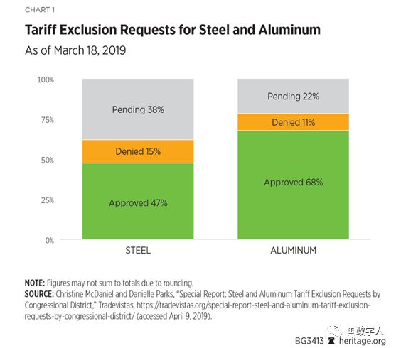

收录于合集

简 介
** 【作者】** Gabriella Beaumont-Smith 是美国传统基金会经济自由研究所数据分析中心的宏观经济学政策分析师，在团队中主要负责分析贸易数据和经济模型，主要研究方向和负责领域为贸易政策、知识产权等。
** 【编译】** 尚道国际资讯 ****
** **【 来源 】****2019年5月30日美国传统基金会
内容提要
为了帮助国内制造业的发展，贸易政策一直是特朗普政府的首要议程。为了实现这个目标，特朗普政府利用职权对从多个贸易伙伴进口的各种商品施加新的贸易壁垒，即关税。尽管特朗普政府认为关税是一种很好的谈判策略，但实施贸易壁垒具有一定的风险性，因为关税会降低美国企业创造的价值，进而损害国内经济发展。许多企业要求政府减免关税，一些企业正在向特朗普政府施压，要求政府考虑用配额取代关税。但配额对经济发展的危害性可能比关税更大。与关税和配额不同，自由贸易允许美国人以不同的价格获得更多不同质量的商品。本文通过阐述关税和配额之间的差异，着重讨论了两者各自带来的意想不到的后果。
正 文
**1
** 关税是如何运作的？
关税是政府对进口到该国的货物征收的一种税。对进口商品征税会使它们更加昂贵。政府主要目的是增加收入和减少进口商品的数量。
许多人认为，当对一个国家征收关税时，这个国家要承担成本。然而，事实并非如此。关税由进口货物的个人或企业支付。当一个政府从关税中征收税收时，是从本国公民那里征税，而并非从货物出口国公民那里征税。由于买方更容易驾驭和遵守国内法律，因此行业惯例是支付所需关税的是买方（进口商）而不是卖方（出口商）。
通常情况下，面临关税的企业无法简单地吸收所有的额外成本，因此他们将一部分关税转嫁给客户，并找到其他方法来削减成本。最终，关税增加的商业成本都转嫁到了美国人身上，影响了他们购买必需商品的能力。关税还会产生长期影响，比如扰乱供应链，损害企业间多年建立的关系。同样的道理也适用于因不确定性而离职的员工。即使取消了关税，企业也必须花时间建立新的关系和寻找新员工，并且还要使员工效率和水平恢复到关税前或者比关税前更高的水平。
**2
** 配额是如何运作的？
配额是政府对进口到该国货物数量施加的限制。与关税相同，施加配额的主要目的是减少进口货物的消费。由于配额不能增收，因此政府更加希望达到的效果是增加国内生产，以弥补进口的损失。
配额的严格程度各不相同。可以施加的最严格的配额允许进口非常小的数量，并且不允许进口商跨时间或跨类别移动货物。配额降低了给予进出口商的灵活性，并且对整个供应链有着巨大的影响。尽管配额的严格程度各不相同，但配额可能会让企业无法获得生产产品所需的材料绝对严格的配额限制了供应商应对产品需求激增的能力。
严格的配额还会阻止企业获得它们所需的材料，尤其是在计算结果有出入的情况下。例如，如果货物到达美国后，海关和边境巡逻队发现配额已满，进口商和出口商必须等到配额重新分配后才能提货。与此同时，进口商面临三种选择：1.把货物转过来；2.将这些货物以债券形式存放在美国；3.毁坏货物。
配额还阻碍了企业提前计划的能力，而这是企业扩张能力的关键。为了继续增长，企业的目标是将成本降到最低，这样他们就可以生产更多的产品，并通过提供更低的价格来占领更大的市场份额。限制生产产品所需材料的进口，会阻碍企业以这种方式增长，导致可用商品减少，价格上涨。
**3
**
政策制定者应该在施加关税或配额之前考虑什么？
关税和配额都阻碍了市场资源的有效配置。尽管政府保护国内产业的出发点是好的，但关税和配额会产生意想不到的后果，影响到它们旨在帮助的那些人。为了评估这些后果，必须考虑到需求的进口弹性和替代品的可用性。
进口弹性。需求的进口弹性（一种衡量企业需求对关税引起的价格变化的敏感程度的指标）是一种有用的工具，可以用来预估关税在减少企业进口的投入方面的效果。例如，中洲钢铁对钢材的需求对价格的变化不是很敏感，因为他们继续进口受影响的钢材并支付关税。这并不是说关税没有产生破坏性影响。这些关税无疑对中洲钢铁及其消费者产生了有害影响。很有可能是中洲钢铁决定支付关税，因为他们在生产过程中使用的钢铁没有好的替代品。由于中洲钢铁无法承受关税施加给他们的成本，他们被迫将其转嫁给客户。然而，转嫁关税的结果是使他们的销售额减少了60%。虽然他们的进口需求弹性对关税引起的价格变化不敏感，但他们的客户的需求弹性对价格的变化非常敏感。
可用性的替代品。替代品的可用性是评估关税和配额可能造成的损害的一个重要因素。如果对一种商品征收关税，而没有合适的替代品，为了继续生产，企业被迫支付关税以获得生产所需的材料。如果由于无法负担生产投入而导致无法获得替代品，高关税将对企业造成严重损害。这可能会迫使一些公司退出市场。
尽管最具竞争力的公司能够在关税的影响下生存下来，但由此剧增的成本可能迫使它们减产、涨价、裁员或削减资本支出。然而，即使是最具竞争力的企业在严格的配额制度下也无法生存。如果一种商品的替代品在国内或其他国家都不容易获得，那么严格的配额对企业的危害最大——因为严格的配额实际上切断了企业的生产投入。因此，即使是最具竞争力的企业也会受到损害。他们将减少产量，因为他们无法进口生产所需的材料。这将导致裁员，并随着商品的更加稀缺而提高对客户的价格。
**4
** 配额可能比关税更有害
通过人为地提高价格和在生产过程限制生产数量，配额和关税都造成市场扭曲。市场本身是一个通过不断调整以适应需求的动态过程，而关税和配额阻碍了这种动态。由于关税是一种税收，其影响可以通过货币贬值和出口补贴得到缓解。然而，严格的配额是最有害的，因为它们切断了生产投入的渠道。
如果政府更感兴趣的是限制进口，而不是赚取收入，那么配额往往会更有效，尤其是在相关商品的需求对价格上涨不敏感的情况下。如果一种商品的需求对价格变化不敏感，那么关税将无法达到政府所期望的减少进口的目标，因为企业只需要支付关税并继续进口。
美国对进口商品征收的配额没有关税那么多。它也很少强加绝对配额。相反，通常是关税和配额二者结合，称为关税税率配额（Tariff-Rate Quotas）。一旦配额被填满，为了进口超过阈值，企业必须支付关税。尽管关税配额可能没有非常严格的配额那么有害，但它仍然对美国企业施加限制，产生负面影响。
以美国关税配额的蔗糖项目为例，该项目限制美国企业可以进口的糖的数量，如果超过这个门槛，就会征收高额关税。其目的是保护国内的制糖产业，但结果是人为地提高了美国食糖的价格。由于关税配额导致进口糖的成本如此之高，许多企业已将生产转移到美国之外。其中一家企业表示，如果美国糖的价格与世界价格相等，他们可以将250个工作岗位从墨西哥迁到俄亥俄州。对于糖果制造商来说，没有合适的糖替代品，因此，关税配额让他们无处可寻。
**
**
**5
** 《贸易扩张法》第232条下的关税和配额
2018年3月，特朗普总统根据1962年《贸易扩张法》的第232条限制钢铁和铝产品进口，对钢铁和铝产品分别征收25%和10%的关税。此外，对从土耳其进口的钢材征收50%的关税（而不是25%的关税）。作为对钢铁和铝征收关税的回应，许多将进口金属作为生产原料的美国生产商提出了关税豁免要求。美国商务部（Department of Commerce）可以批准企业的关税豁免请求，如果“该物品不是在美国生产的：（1）数量充足且合理；（2）质量好；（3）有具体的国家安全考虑”应当排除。截至到2019年3月18日，钢铁和铝的关税豁免申请分别为45328件和6017件。在关税方面的明显差异（钢铁25%，铝10%）可能是关税豁免申请出现巨大差异的一个主要原因。
如表1所示，47%的钢铁申请已获批准，15%的申请被拒绝，38%的申请正在等待批准。对于铝来说，68%的项目已经获得批准，11%的项目被否决，22%的项目正在等待批准。

韩国根据第232条获得了豁免，美国对从韩国进口的钢厂产品实施了配额。韩国的出口限额被设定为过去三年平均贸易量的70%，而过去三年的平均贸易量约为268万吨。但是，韩国政府选择将268万吨分成54个单独的单位，每一单位有一个配额，从而使问题更加复杂。另外，还有季度限制，对一年内任何一个季度可进口的54个单位中每一单位的数额的限制。最后，将268万吨钢材按216个指标进行分配。配额于2018年4月30日公布，并于2018年5月1日凌晨12:01生效。大多数出口商直到消息公布前几小时才知道，而已经运往美国的钢铁产品遭受到了配额的冲击。
许多韩国钢铁企业专门生产美国制造商无法轻易替代的特定钢铁产品。2018年9月，通常由韩国钢铁企业提供钢铁产品的美国石油行业产量激增。由于日本企业同样也能够提供高科技管道，所以可以弥补韩国对美国出口的部分损失，但日本无法满足韩国企业为美国供应的需求。2018年1月至7月，从日本进口的管材和管材产品增加了近50%，而从韩国进口下降了18%。
**6
** 结 论
特朗普政府应该避免征收任何关税，也不应该用配额取代目前的关税。两者都对美国企业和家庭有害。如果必须实施其中一项贸易限制，政策制定者应该认真考虑美国企业在生产中是否有替代品。美国并非在所有事情上都具有比较优势，而实施一项使进口商品变得更贵的贸易限制也不会改变这一点。关税和配额带来的巨大成本伤害了所有人，穷人的感受最为深刻，因为他们对价格上涨最为敏感。
在主导生产过程方面，市场的力量仍旧是最有效的。如果替代品是可用的（国内或其他国家），那么美国企业目前不使用替代品是有原因的。以韩国为例，日本企业提供了特种管道的替代品，但无法满足美国企业的需求。韩国企业可以满足这种需求，但由于配额限制，美国的钢管数量减少。
尽管政府的出发点是好的，比如希望提高国内生产商的市场份额，但关税和配额会产生意想不到的后果。实施任何贸易限制都会降低企业的自主权，损害其将业务成本降至最低或适应其需求的能力。提高壁垒也增加了市场的不确定性。为了创新、生产更多的商品和提供服务，美国企业依靠确定性做出长期决策。关税和配额都使这些过程更加难以实现。
关税和配额给企业带来的问题在于进口产品对生产过程的重要性。关税和配额都破坏了市场自由，扰乱了供应链，人为地改变了价格。这些贸易壁垒还可能限制企业的生产能力，限制其客户的生产能力，这可能导致美国人在商店里的选择更少。
为了增加国内生产，特朗普政府应该减少贸易壁垒，致力于自由贸易。关税和配额是旨在增加国内生产的工具，但往往限制国内经济活动，增加政府对经济的控制。自由贸易让美国人有更多的选择，因为企业可以以不同的价格获得不同质量的商品。
_ ** _ 本文由国政学人微信平台独家编辑首发**
更多阅读
【重磅速递】约瑟夫·奈：美国霸权的兴衰：从威尔逊到特朗普 | 国政学人
【重磅推荐】巴里·布赞：英国学派视角下的中国崛起 | 国政学人
【重磅速递】米尔斯海默：注定失败：自由主义国际秩序的兴衰 | 国政学人
【百年国关】历史在国际社会中的应用：从巴黎和会到现在 | 国政学人
【国际组织】IO杂志：联合国维和行动的武力运用问题研究 | 国政学人
【国际秩序】为什么自由主义国际秩序理念将美国外交政策引入歧途？| 国政学人
【关系理论】“关系”：世界政治关系理论的中国话语 | 国政学人
【英国学派】张勇进：中国与全球国际社会中的自由主义等级制：实力与对规范变迁的协商 | 国政学人
【地区秩序】论经济实力的可转化性：中国经济崛起与东亚安全秩序 | 国政学人
【中俄关系】不得已的伙伴：系统-单元动态与中俄关系 | 国政学人
【IPE研究】美国对外贸易政策的“1934年体制”是如何形成的？| 国政学人
【现实主义】斯蒂芬·沃尔特：傲慢的终结与美国克制的新时代 | 国政学人
【理论批判】系统、层次与结构理论：沃尔兹的理论并非系统理论 | 国政学人
【外交政策】单极体系下的不和平状态与美国外交政策 | 国政学人
【欧洲研究】资本主义多样性与合规：加入欧盟后中东欧的经济改革 | 国政学人
【理论研究】吴建树：权力、道德、均势、联盟与摩根索——汉斯·摩根索的经典现实主义思想再解读
【友谊国关】将友谊重新引入国际关系：从中国到西方的关系本体论
【定量研究】政党实力和经济增长（Party Strength and Economic Growth）| 国政学人